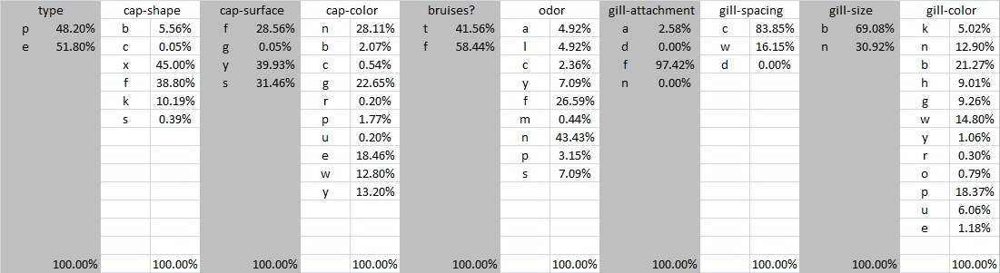
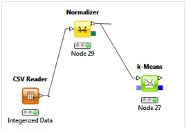
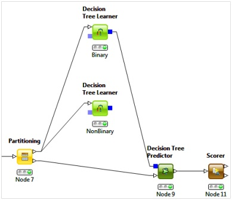

The first task with any data mining exercise is to examine the data. The mushroom data set has single character values for each of 23 mushroom parameters. The main class of interest is type, of which the choices are edible or poisonous. Since the data is a set of 2-12 finite characters for each mushroom parameter, traditional statistical values like mean and standard deviation cannot be calculated. The only useful statistical value is the percentage breakdown for each parameter choice. The easiest tool for gathering and viewing the percentage breakdown on one screen is MS Excel.
The data is later transformed to integers, which allows the application of statistical methods. Statiscal values are not calculated on the integerized data set because they have no meaning. A mean of 6.45 for the cap-color means nothing.
There is some information gained from this percentage breakdown. Class veil-type has no effect on the data since one value is present in 100% of the data. This class can be eliminated. A few values are not present in the data set and should be removed as well. These include d for gill-spacing, z for stalk-root, s and z for ring-type. There are a number of variables with percentages lower than 0.50% presence in the data set, for example: c in cap-shape has a count of 4 or 0.05%. These variables suggest anomalous data and should be examined in more detail.
The data set is very close to complete. Only a small portion of one variable is unknown denoted by x in stalk-root. The data does not suggest any other easily observable errors, clusters, grouping or rules.
It is desirable to be able to sort edible and poisonous mushrooms. Especially if you are lost in the forest and need something to eat! Classical clustering methods rely on a distance metric, which cannot be calculated on single characters. A transformation was created where the character were sorted alphabetically then assigned an integer value. As mentioned above, these values have no meaning, but were used to see if k-Means, DBScan or agglomerative hierarchical clustering could yield useful results. KNIME requires the values to be normalized to [0,1] for its k-Means algorithm. Surprisingly some results were obtained that are interesting which are shown below. What is interesting is that one cluster's type value is at a normalized value of 1.0, translating to "p" for poisonous. This appears interesting until the cluster counts are examined. The actual data is close to a 50-50 split and the k-Means clusters are nowhere near those values. It is important to note that the other values shown are normalized. Agglomerative hierarchical clustering in KNIME would not run and DBScan gave useless results. The initial belief that classical clustering techniques cannot be applied to non-ordered data because of the lack of a useful distance metric appears to be correct.
The logical choice foranalyzing data with discrete values for its parameters is classification algorithms. Various algorithms in Weka and KNIME were investigated. Classification algorithms yielded immediate results with excellent training results. Of the two software options, KNIME was the clear choice. The algorithm options and visualization options were significantly better. A decision tree algorithm was used. Initially a binary and non-binary learner were used. For the mushroom data set a binary split was sufficient and is presented because it is much easier to comprehend. Only two parameters, odor and spore-print-color, are needed to classify the mushroom type with over 99% percent accuracy. Omitting spore-print-color from the classifier has a minor effect on the accuracy. The MDL pruning method was very effective in removing 6 additional levels that provided no additional useful data. The split of the training and verification data also had no effect on the model accuracy. An initial split of 80%/20% training/verification was reduced to 25%/75% without any loss in accuracy. The final model shown below used a 25%/75% training/verification split and had an accuracy of 99.327%. If you are lost in the woods, use your nose to find the right mushrooms to eat. Assuming that you can differentiate between smells like "anise", "creosote" and "spicy".
As suggested in the data analysis section, some anomalies in the data exist. This is supported by the fact that there is a very high model accuracy which is close to 100%. The few cases that do not fir the model may be anomalies. Pinpointing which records are anomalous using anomaly detection algorithms requires numerical values to perform statistics evaluation or find distance metrics for clustering or density calculations. As discussed above, these cannot be calculated for discrete character values. All that can be said is that some anomalies exist, but are not significant with regard to classifying mushroom type.
Looking for associations using both KNIME and Weka was the opposite of classification analysis. KNIME could not be used at all and Weka was straightforward and had all the options desired. In particular, KNIME wants a BitVector or Collection which are poorly documented. There are no easy to find examples from KNIME or anyone on Google about how to use the Association Rule Learner. Even when the Weka filter filters.unsupervised.attribute.NominalToBinary was used and the binarized data was fed into the Associate Rule Learner, nothing worked. Weka was quite capable and straight-forward. It was easy to use to obtain rules that pertained to the type class. The results for the top 10 rules are below, of which 4 have a confidence over 90% and can be used. Rule 2 is redundant given Rule 1 and it is not clear why this was not pruned. Similarly, Rule 4 is redundant given Rule 3. The first rule agrees with what was discovered in classification analysis - that odor is a strong 1 itemset and has a strong co-occurrence with type. Various vales for minimum support and minimum confidence were examined, but did not change the top rules.
=== Run information ===